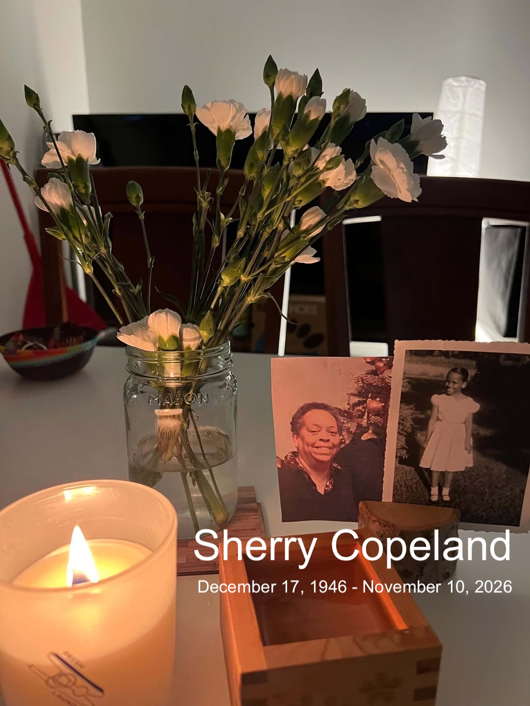

Sherry Copeland passed away on November 10, 2026. I’m dedicating this project to everyone whose life she touched. Move your body and head in front of the webcam to reach each floating bubble—representing Denial, Anger, Bargaining, Depression, and Acceptance—where you can write a letter to Sherry and click "Send." Once you've completed all five grief stages, Sherry will depart, carrying your letters with her. I photoshopped Sherry's photo like a ghost. Her background is the Bluegrass State, Kentucky.